地政学
シドニーは連邦首都ではありませんが、金融、移民、国際線、港湾、メディアで豪州の外向きの顔になります。太平洋とインド洋、アジア、英語圏を結び、州都として人口、資本、住宅政治、気候政策を扱う実務都市です。
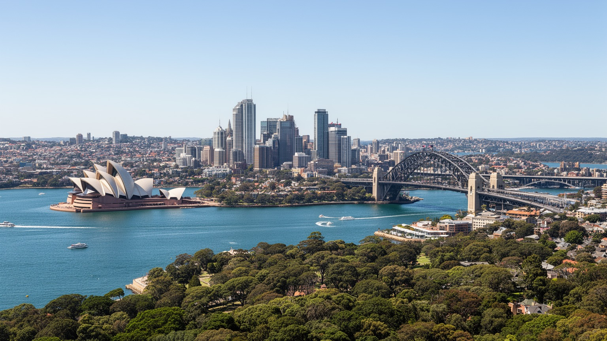
🇦🇺 オーストラリア / ニューサウスウェールズ州 / World City Atlas
深い天然港を中心に、先住民の土地記憶、英国植民地の起点、金融と専門職、港湾と空港、移民の郊外、海辺の観光、住宅費の圧力が重なるオーストラリア最大都市です。
都市の骨格
シドニーは、港を美しい背景としてだけでなく、植民地支配、貿易、金融、移民、通勤、観光、住宅価格を方向づけてきた都市です。湾の近さと郊外の広がりが、豊かさと負担を同時に見せます。
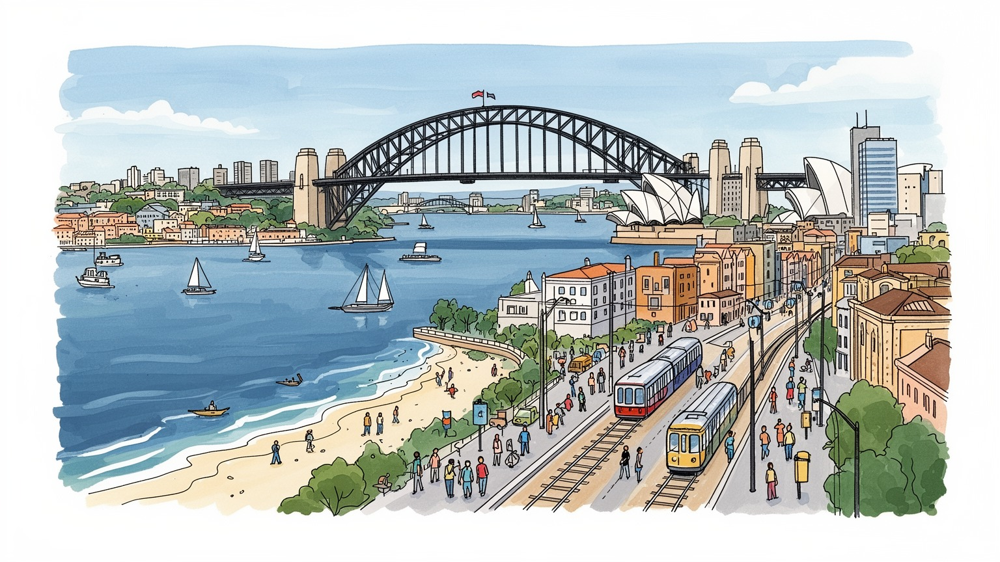
シドニーは連邦首都ではありませんが、金融、移民、国際線、港湾、メディアで豪州の外向きの顔になります。太平洋とインド洋、アジア、英語圏を結び、州都として人口、資本、住宅政治、気候政策を扱う実務都市です。
金融、専門サービス、港湾、空港、大学、医療、観光、建設、技術職が厚い雇用を作ります。高賃金の中心部の周囲で、清掃、介護、飲食、配送、倉庫、建設の仕事が都市を支え、家賃と通勤が生活を強く分けています。
アボリジナルの土地記憶、英国系制度、アジアや中東からの移民、教会、モスク、寺院、劇場、映画、大学、海辺のスポーツが文化を形づくります。華やかな港の景観の奥に、礼拝と言語、食卓の日常が深く続いています。
住民は鉄道、バス、フェリー、車で湾と郊外を行き来し、旅行者はオペラハウス、橋、海岸、市場、世界遺産を巡ります。美しい都市像の下で、住宅費、気候災害、通勤、社会格差が日々の重い負担として残り続けています。
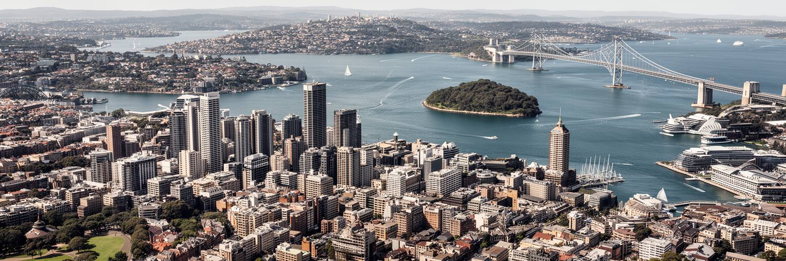
シドニーの都市構造は、ポート・ジャクソンと呼ばれる深い天然港から始まります。湾は単なる名所ではなく、植民地の拠点、軍事上の避難港、貿易の玄関、フェリー交通、住宅価格、観光の視線を長く方向づけてきました。入り江と岬が細かく入り組むため、海に近い地区は景観と資産価値を得やすい一方、橋やトンネルに移動が集中します。中心市街地は湾の南側に伸び、北岸、東部海岸、西部郊外、空港と港湾のある南部が異なる生活圏を作ります。美しい水面は都市の象徴ですが、そこには埋め立て、造船、倉庫、軍港、下水、先住民の漁場の記憶も重なっています。都心の高層街から数分で岩場、フェリー桟橋、庭園、テラスハウスへ視界が切り替わり、潮の匂い、フェリーの汽笛、朝のカモメの声が通勤の音に混ざります。この変化は絵葉書だけでなく、湾が都市を細かく分けた結果です。港の近さは住民に誇りを与えますが、誰が水辺へ近づけるのか、誰が長い通勤を引き受けるのかという格差も生みます。地形を読むことは、美しさと不公平を同時に見ることです。湾を中心にした都市は、橋の容量、フェリーの頻度、歩行者の水辺アクセス、海面上昇への備えまで、日常の制度として港を管理し続ける必要があります。岬ごとに違う眺めと距離感があり、同じ市内でも海辺の豊かさと内陸側の生活負担は大きく変わります。
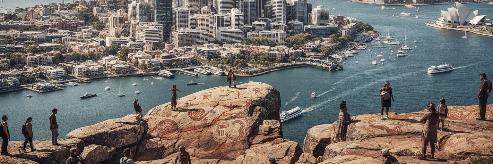
現在のシドニーは、英国植民地の起点として語られがちですが、その前からエオラ、ダルグ、ダラワルをはじめとする先住民の土地と水の世界がありました。湾、川、岩場、砂浜、森は食料、儀礼、移動、物語の場所であり、岩絵や貝塚は都市化の下にも記憶を残しています。1788年の入植は、土地の奪取、病気、暴力、移動の制限をもたらし、港の美しい景観の背後に深い断絶を刻みました。今日のシドニーでは、アボリジナルのコミュニティ、文化センター、大学、芸術、言語復興、土地権、追悼行事が、都市の公共空間に先住民の現在を戻しています。観光客がオペラハウスやロックスを歩く時、そこは植民地建築の場所であるだけでなく、長い湾岸生活が押し込められた場所でもあります。開発事業では、考古遺産、儀礼の場所、水辺の生態、地域の長老の声をどう扱うかが問われます。先住民史を飾りとして扱うと、都市の理解は浅くなります。シドニーを読むには、港が誰の土地であり、誰が名前を付け、誰が立ち退かされ、誰が語る権利を持つのかを考える必要があります。美しい都市景観の中に土地の喪失と再生の努力を見つけることが、この街を誠実に理解する入口になります。学校、博物館、式典、地名、芸術作品を通じて、先住民の記憶は現在の都市政策にも関わり続けています。湾の名も問い直されます。
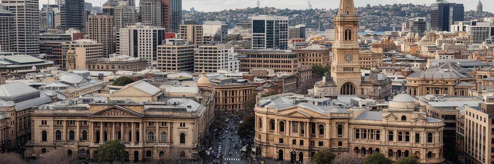
シドニーはキャンベラのような連邦首都ではありませんが、ニューサウスウェールズ州を運営する州都です。州議会、裁判所、政府機関、警察、病院、大学、メディアが集中し、人口、交通、住宅、教育、医療、防災、港湾、環境の政策を扱います。州内には西部の乾燥地、内陸農業地帯、鉱業地域、沿岸観光地、先住民コミュニティが広く分布し、その論点が官庁街、テレビ局、ラジオ、SNSの議論へ集まります。昼の記者会見は夜のニュースと地域SNSで受け止められます。州都機能は、華やかな首都儀礼というより、予算配分、鉄道整備、病院の人員、学校区、住宅供給、洪水や山火事への対応として生活に戻ってきます。シドニーの人口集中は州財政と政治力を強めますが、地方都市からは資源と注意が大都市へ偏るという不満も出ます。州都を読むことは、CBDの摩天楼だけでなく、パラマタへの行政機能の分散、郊外病院、裁判所、学校、道路工事、緊急対応のネットワークを見ることです。公共投資は住宅価格や通勤時間を変え、災害時の判断は沿岸部や内陸部の生活を左右します。シドニーは国際都市である前に、広い州の制度を毎日動かす実務都市でもあります。その責任は港の観光イメージより広く、保育、職業教育、救急搬送、農産物の物流、災害後の復旧にもつながります。州全体を背負う緊張もあります。
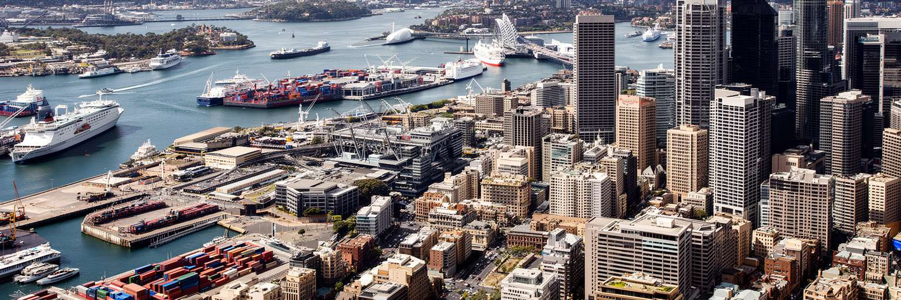
シドニーの経済は、金融、保険、法律、会計、広告、技術、大学、医療、観光、港湾、空港物流が重なって成り立ちます。中心部には銀行、投資、専門サービス、企業本部が集まり、オーストラリアの資本市場と国際ビジネスの窓口になります。港湾は都心の旧港からボタニー湾側へ重心を移し、コンテナ、燃料、空港貨物、倉庫、トラック輸送と結びつきます。見える都市像は高層オフィスと港の景観ですが、その下には清掃、警備、倉庫、配送、通関、整備、飲食、ホテル、介護の仕事があります。金融都市の豊かさは高賃金の専門職を生む一方、家賃を押し上げ、中心部で働く低賃金職が遠くから通う構造も強めます。国際観光と留学は都市に収入と多様性をもたらしますが、パンデミックや航空需要の変化に弱い面も示しました。港湾と空港は便利な背景ではなく、島国経済の生命線です。物流が詰まれば、スーパーの棚、建設現場、病院の物資、輸出入業者に影響が広がります。シドニーの産業を読むには、金融街の数字と港湾労働の早朝、大学の研究とホテルの夜勤、スタートアップの成長と住宅費の圧力を同じ地図に置く必要があります。都市の競争力は、資本を集める力だけでなく、働く人が住み、移動し、学び直せる条件で決まります。港と金融が強いほど、都市は世界市場の変動にも敏感になります。
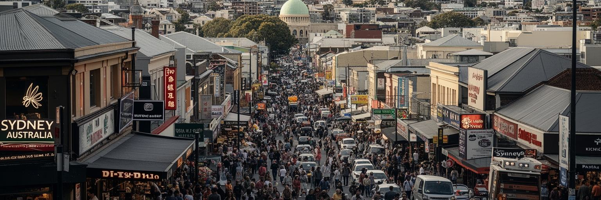
シドニーの多文化性は、中心部の国際的な雰囲気だけでなく、郊外の商店街、学校、礼拝所、食堂、家族のネットワークに根づいています。中国、インド、英国、ベトナム、フィリピン、レバノン、韓国、ネパール、イラク、太平洋地域など、移民の流れは地域ごとに異なる生活文化を作りました。チャイナタウン、カブラマッタ、リバプール、オーバーン、ハリスパーク、ハーストビルなどを歩くと、言語、香辛料、礼拝暦、送金、教育熱、家族経営の店が都市の地図を変えていることが分かります。週末の市場では麺、カレー、菓子、果物の匂いが重なり、小さな屋台や惣菜店が路上経済を支えます。多文化性は祭りや料理の豊かさとして見えやすいですが、その背後には資格認定、英語教育、差別、移民資格、住宅の過密、介護や配送の労働があります。教会、モスク、寺院、シナゴーグ、グルドワラは、祈りの場であると同時に、相談、食事、葬儀、教育、仕事探しを支える社会施設になります。シドニーが国際都市であり続けるには、多様性を消費するだけでなく、移民の子どもが学校で学び、親世代が医療を受け、若い家族が住まいを得られる制度が必要です。郊外の商店街は観光名所よりも都市の現在を正直に映し、地域ラジオやSNSの告知が言語を越えた支援を結びます。そこでは世界の料理が並ぶだけでなく、複数の故郷を持つ人びとが都市に居場所を作っています。
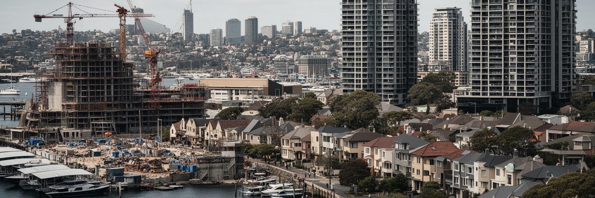
シドニーの生活を最も強く左右する焦点は住宅です。港、海岸、雇用、大学、治安、景観、国際性が人を引きつける一方、土地の制約、投資需要、低密度の郊外、建設費、移民流入、所得格差が価格と家賃を押し上げてきました。海に近い東部や北岸、都心周辺は高額化し、若い世代、学生、サービス職、移民家族は西部や南西部、外縁部へ広がりやすいです。外側の住宅地は広さを得やすい半面、通勤時間、車の維持費、暑さ、公共交通の不足が生活を圧迫します。集合住宅の増加は供給を増やす可能性を持ちますが、学校、緑地、医療、買い物、日陰、下水、地域の記憶を伴わなければ、密度だけが住民に押し付けられます。住宅難は単なる不動産市場ではなく、誰が都市の中心で働き、誰が遠くへ移動し、誰が親族と同居し、誰が冷房費を削るのかという生活上の焦点です。先住民、低所得世帯、単身高齢者、難民、学生は特に不安定になりやすく、子どもの通学や高齢者の通院にも距離が影響します。シドニーの魅力を長く保つには、景観の価値を守るだけでなく、手頃な賃貸、公共住宅、交通投資、既存住民の保護を同時に進める必要があります。美しい港の都市であるほど、そこで働く人が住めるかどうかが都市の信頼を測ります。住宅政策は、都市の成功を誰に分けるのかを決める制度です。家を失わずに地域が変われる仕組みも欠かせません。
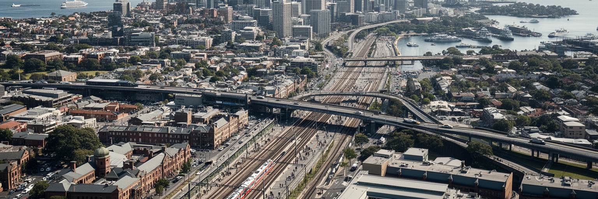
シドニーの移動は、港を越えることと、広い郊外を結ぶことの二つに縛られています。鉄道、メトロ、バス、ライトレール、フェリー、高速道路、空港が重なり、中心部、北岸、東部海岸、西部のパラマタ、南西部、ボタニー湾を結びます。フェリーは観光の象徴であると同時に、湾岸住民の公共交通です。鉄道は都市圏の背骨ですが、住宅地が外へ伸びるほど駅から遠い地区も増え、車依存が残ります。新しいメトロや空港関連投資は都市の重心を西へ広げる可能性を持ちますが、工事費、運賃、乗り換え、既存路線との接続、駅周辺の開発利益をどう分けるかが議論になります。通勤時間は所得と住宅価格に直結し、遠くに住むほど早朝出勤、保育、介護、学習時間に影響します。暑い夏には、駅までの歩道の日陰やバス停の待ち環境も重要です。交通政策を高速化だけで評価すると、歩ける街路、障害者の移動、夜勤者の帰宅、学生の安全、低所得地域の便数が抜け落ちます。シドニーを生活都市として読むには、観光客が空港から港へ向かう経路だけでなく、清掃員が夜明け前に都心へ着く道、看護師が病院へ通う路線、子どもが学校へ歩く日陰を見なければなりません。交通網は都市の公平性そのものを形にします。湾の美しさも、通勤の負担も、同じ移動の地図に描かれています。乗り換えの容易さも生活時間を変えます。
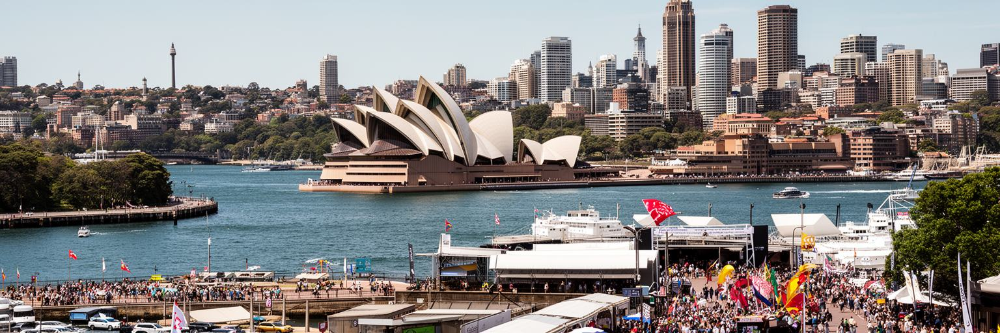
シドニーの文化は、オペラハウスの象徴性だけで説明できません。劇場、映画、現代美術、文学、大学、音楽フェスティバル、先住民アート、LGBTQ+ の祝祭、多文化の食と礼拝、海辺のスポーツが重なり、都市の公共性を作っています。港に面した舞台や美術館は世界的な注目を集めますが、郊外の小劇場、コミュニティセンター、学校、礼拝所、ライブハウス、深夜のバーも表現の基盤です。ラグビー、クリケット、サーフィン、ライフセービングは週末の会話を作り、地元ラジオやSNSは試合、ライブ、抗議、祭りを素早く広げます。高い家賃は若い芸術家や小さな店を中心部から押し出しやすく、夜間経済をめぐる規制や騒音も文化の広がりに影響します。マルディグラのような大きなイベントは都市の多様性を示す一方、日常の差別や安全、医療、住宅の論点を消すものではありません。先住民文化を扱う場では、語り手の権利、土地との関係、観光消費への配慮が欠かせません。文化都市の価値は、名建築やチケット販売だけでなく、誰が表現でき、誰が観客になれ、誰の歴史が中心に置かれるかで測られます。シドニーは英語圏のメディア都市であり、アジア太平洋の移民都市でもあります。その二つの位置が、映画、音楽、食、教育、デザインに独特の混ざり方を与えています。港の華やかな舞台と、郊外の生活から生まれる表現を同じ文化地図に置く時、観光名所を超えた厚みが見えてきます。
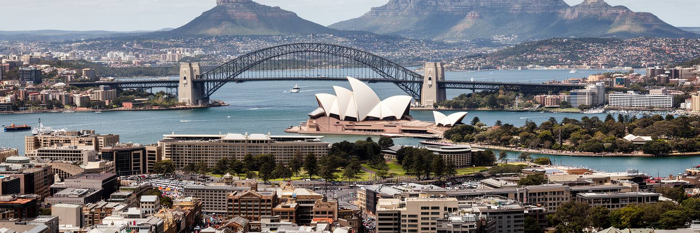
シドニー観光は、オペラハウス、ハーバーブリッジ、ロックス、王立植物園、ダーリングハーバー、ボンダイ、マンリー、フェリー、マーケット、博物館、ブルーマウンテンズへの日帰り旅で強い吸引力を持ちます。港を横切るだけで都市の輪郭がつかめ、海岸へ向かえばサーフィン、崖の散歩、カフェ、ライフセービング文化に触れられます。世界遺産のオペラハウスは建築の名所であると同時に、公共芸術、国家イメージ、港の景観管理をめぐる重要な舞台です。観光はホテル、飲食、ガイド、フェリー、小売、劇場、清掃、警備、空港の雇用を支えますが、人気地区では混雑、短期滞在用住宅、価格上昇、文化の商品化も起こります。魚市場や週末市では氷、海産物、コーヒー、焼き菓子の匂いが混ざり、買い物は旅と住民の日常を近づけます。ロックスの石畳は植民地史を感じさせますが、そこには先住民の土地喪失、囚人労働、港湾労働の記憶もあります。海岸の明るさも、日差し、救助、環境負荷、観光客のマナーによって支えられます。良い観光は、写真を撮るだけでなく、都市の複数の地域へ時間と収入を分け、先住民の語りや移民の商店街、公共交通の使い方を尊重することから始まります。シドニーは短い滞在でも分かりやすい都市ですが、分かりやすさに甘えると港の背後の労働と歴史を見落とします。旅の魅力を深める鍵は、名所の美しさと、それを支える都市の日常を同時に見ることです。
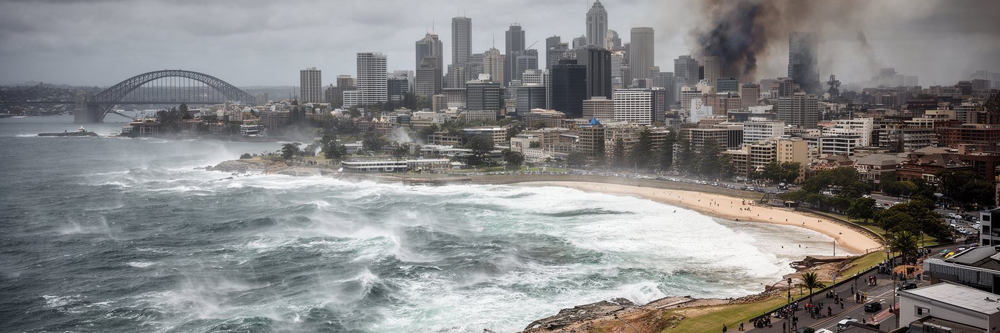
シドニーの気候は温暖で、海風と青い空が都市の魅力を支えています。しかし気候リスクはすでに日常の焦点です。猛暑、山火事の煙、豪雨、洪水、海岸侵食、高潮、干ばつは、住宅、学校、交通、医療、観光、港湾に影響します。西部郊外は内陸性の暑さを受けやすく、海沿いの地区より気温が高くなる日があります。緑陰の少ない街路、断熱の弱い住宅、冷房費を抑える世帯、屋外労働者、高齢者、子どもには暑さが健康リスクになります。午後の照り返し、熱いアスファルト、煙でかすむ空、急な雨音は、気候を数字ではなく身体で感じさせます。海岸では砂浜の後退や崖の不安定化が、観光と住宅の両方に関わります。気候適応は、単に再生可能エネルギーを増やす話ではありません。街路樹、涼しい避難場所、公共住宅の断熱、排水、早期警報、海岸管理、保険、緊急時の多言語情報、地域コミュニティの支援まで含む都市政策です。美しい海辺の都市であるほど、水と熱への備えを景観の裏側に隠さず、公共の論点として扱う必要があります。シドニーの将来は、世界都市としての競争力だけでなく、暑い日に歩ける道、煙の日に守られる学校、洪水後に戻れる家によって評価されます。気候への備えは、都市の快適さと公平性を結び直す作業です。湾岸と西部でリスクが違うため、地域別の対策が必要になります。
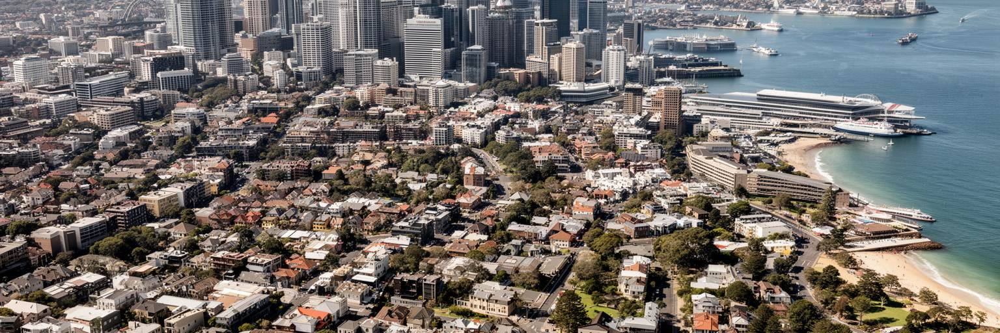
シドニーは、港の景観だけで世界に認識される強い都市です。オペラハウス、橋、フェリー、海岸、青い空は、訪れる人にも住む人にも忘れがたい印象を与えます。しかし都市を深く読むには、その美しさがどのような歴史、制度、労働、格差の上に成り立つのかを同時に見なければなりません。先住民の土地と水の記憶、植民地の起点としての暴力、州都としての行政責任、金融と港湾の国際性、移民郊外の多言語の日常、住宅費の重さ、通勤の長さ、気候リスクは、別々の話ではなく一つの都市構造です。中心部の水辺を歩く時、そこには観光、国家イメージ、公共空間、資本市場、土地の記憶が重なります。西部郊外の駅前や商店街を歩く時、都市の成長を支える労働、家族、礼拝、教育の現場が見えます。シドニーの価値は、絵になる港だけではありません。異なる背景の人びとが都市に参加し、働く人が住み、海辺と郊外が公平に結ばれ、気候の危険に備えられるかにあります。美しさと負担を同じ地図に置くことで、シドニーは観光都市でも金融都市でもある前に、複雑な生活都市として立ち上がります。港を眺める視線が、歴史と制度と日常へ広がる時、この都市の本当の輪郭が見えてきます。旅行者にも住民にも、その重なりを読む姿勢が求められます。港の明るさの奥へ進むほど、都市の未来を考える材料が増えていきます。